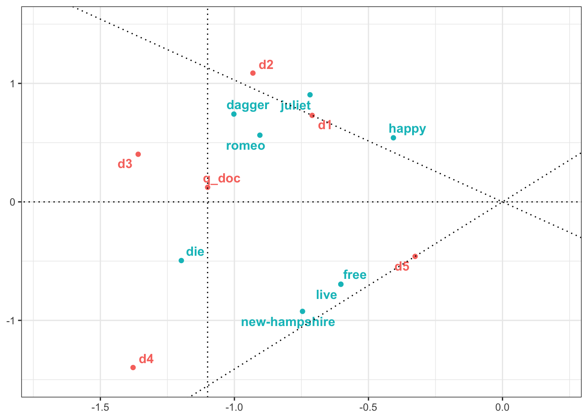
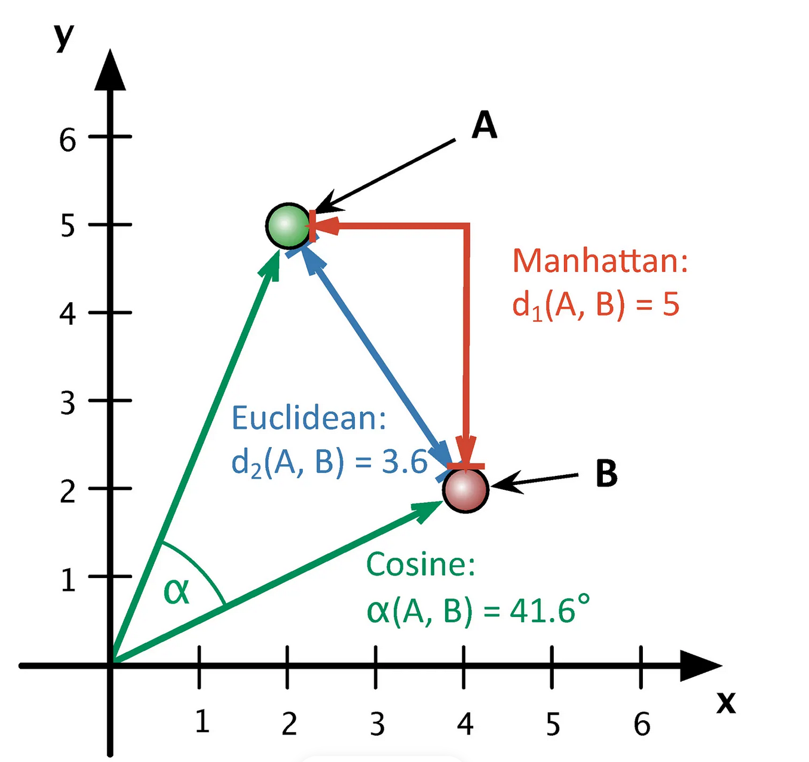

12 Векторные представления слов
12.1 Векторы
Векторные представления слов - это совокупность подходов к моделированию языка, которые позволяют осуществлять семантический анализ слов и составленных из них документов. Например, находить синонимы и квазисинонимы, а также анализировать значения слов в диахронной перспективе.
В математике вектор – это объект, у которого есть длина и направление, заданные координатами вектора. Мы можем изобразить вектор в двумерном или трехмерном пространстве, где таких координат две или три (по числу измерений), но это не значит, что не может быть 100- или даже 1000-мерного вектора: математически это вполне возможно. Обычно, когда говорят о векторах слов, имеют в виду именно многомерное пространство.
Что в таком случае соответствует измерениям и координатам? Тут есть несколько подходов.
Мы можем, например, создать матрицу термин-документ, где каждое слово “описывается” вектором его встречаемости в различных документах (разделах, параграфах…). Слова считаются похожими, если “похожи” их векторы (о том, как сравивать векторы, мы скажем чуть дальше). Аналогично можно сравнивать и сами документы.
| As You Like It | Twelfth Night | Julius Caesar | Henry V | |
|---|---|---|---|---|
| battle | 1 | 1 | 8 | 15 |
| soldier | 2 | 2 | 12 | 36 |
| fool | 37 | 58 | 1 | 5 |
| clown | 6 | 117 | 0 | 0 |
Второй подход - зафиксировать совместную встречаемость (или другую меру ассоциации) между словами. В таком случае мы строим матрицу термин-термин. За контекст в таком случае часто принимается произвольное контекстное окно, а не целый документ. Небольшое контекстное окно (на уровне реплики) скорее сохранит больше синтаксической информации. Более широкое окно позволяет скорее судить о семантике: в таком случае мы скорее заинтересованы в словах, которые имеют похожих соседей.
И матрица термин-документ, и матрица термин-термин на реальных данных будут длинными и сильно разреженными (sparse), т.е. большая часть значений в них будет равна 0. С точки зрения вычислений это не представляет большой трудности, но может служить источником “шума”, поэтому в обработке естественного языка вместо них часто используют так называемые плотные (dense) векторы. Для этого к исходной матрице применяются различные методы снижения размерности.
В этом уроке мы рассмотрим алгоритм LSA, который использует матрицу термин-документ и снижение размерности при помощи SVD, а в следующий раз поговорим о других подходах, в том числе с использованием (поверхностных) нейросетей.
12.2 Латентно-семантический анализ
LSA (Latent Semantic Analysis), или LSI (Latent Semantic Indexing) – это метод семантического анализа текста, который позволяет сопоставить слова и документы с некоторыми темами (топиками). Слово “latent” (англ. “скрытый”) в названии указывает на то, сами темы заранее не известны, и задача алгоритма как раз и заключается в том, чтобы их выявить.
Создатели метода называют LSA опираются на основополагающий принцип дистрибутивной семантики, согласно которому смысл слова определяется его контекстами, а смысл предложений и целых документов представляет собой своего рода сумму (или среднее) отдельных слов.
На входе алгоритм LSA требует матрицу термин-документ. Она может хранить сведения о встречаемости слов в документах, хотя нередко используется уже рассмотренная мера tf-idf. Это связано с тем, что не все слова (даже после удаления стоп-слов) служат хорошими показателями темы: слово “дорожное”, например, служит лучшим показателем темы, чем слово “происшествие”, которое можно встретить и в других контекстах. Tf-idf понижает веса для слов, которые присутствуют во многих документах коллекции.
Дальше мы рассмотрим общий принцип действия алгоритма на очень простом примере, после чего попытаемся его применить к реальным данным.
12.3 LSA на простом примере
Дан “корпус” из пяти документов.
| doc | text |
|---|---|
| d1 | Romeo and Juliet. |
| d2 | Juliet: O happy dagger! |
| d3 | Romeo died by dagger. |
| d4 | “Live free or die”, that’s the New-Hampshire’s motto. |
| d5 | Did you know, New Hampshire is in New-England. |
После удаления стоп-слов термдокументная матрица выглядит так.
По этой матрице пока нельзя сделать вывод о том, с какими темами связаны, с одной стороны, слова, а с другой - документы. Ее необходимо “переупорядочить” так, чтобы сгруппировать слова и документы по темам и избавиться от малоинформативных тем. Примерно так.

Для этого используется алгебраическая процедура под названием сингулярное разложение матрицы (SVD).
12.4 Сингулярное разложение матрицы
При сингулярном разложении исходная матрица \(A_r\) проецируется в пространство меньшей размерности, так что получается новая матрица \(A_k\), которая представляет собой малоранговую аппроксимацию исходной матрицы.
Для получения новой матрицы применяется следующая процедура. Сначала для матрицы \(A_r\) строится ее сингулярное разложение (Singular Value Decomposition) по формуле: \(A = UΣV^t\) . Иными словами, одна матрица представляется в виде произведения трех других, из которых средняя - диагональная.

Здесь U — матрица левых сингулярных векторов матрицы A; Σ — диагональная матрица сингулярных чисел матрицы A; V — матрица правых сингулярных векторов матрицы A. Мы пока не будем пытаться понять, что такое сингулярные векторы с математической точки зрения; достаточно думать о них как о топиках-измерениях, которые задают пространство для наших документов.
Строки матрицы U соответствуют словам, при этом каждая строка состоит из элементов разных сингулярных векторов (на иллюстрации они показаны разными оттенками). Аналогично в V^t столбцы соответствуют отдельным документам. Следовательно, кажда строка матрицы U показывает, как связаны слова с топиками, а столбцы V^T – как связаны топики и документы.
Некоторые векторы соответствуют небольшим сингулярным значениям (они хранятся в диагональной матрице) и потому хранят мало информации, поэтому на следующем этапе их отсекают. Для этого наименьшие значения в диагональной матрице заменяются нулями. Такое SVD называется усеченным. Сколько топиков оставить при усечении, решает человек.
Собственно эмбеддингами, или векторными представлениями слова, называют произведения каждой из строк матрицы U на Σ, а эмбеддингами документа – произведение столбцов V^t на Σ. Таким образом мы как бы “вкладываем” (англ. embed) слова и документы в единое семантическое пространство, число измерений которого будет равно числу сингулярных векторов.
12.5 SVD в базовом R
Применим SVD к игрушечной термдокументной матрице, которую мы создали выше. В R для этого есть специальная функция (и не одна).
my_svd = svd(df)
my_svd$d
[1] 2.2852979 2.0102582 1.3606993 1.1181404 0.7965768
$u
[,1] [,2] [,3] [,4] [,5]
[1,] -0.3961528 0.2800574 0.57117132 0.44968498 0.10183880
[2,] -0.3142681 0.4495321 -0.41059055 0.51301824 -0.20390607
[3,] -0.1782395 0.2689915 -0.49732052 -0.25699778 -0.04305233
[4,] -0.4383638 0.3685083 -0.01287918 -0.57732882 0.21964021
[5,] -0.2638806 -0.3459214 -0.14578908 0.04748488 -0.41748402
[6,] -0.5240048 -0.2464047 0.33865227 -0.27284616 -0.15479149
[7,] -0.2638806 -0.3459214 -0.14578908 0.04748488 -0.41748402
[8,] -0.3263732 -0.4596688 -0.31700297 0.23724380 0.72485145
$v
[,1] [,2] [,3] [,4] [,5]
[1,] -0.3108657 0.3629332 0.1180134 0.86098600 -0.12813236
[2,] -0.4073304 0.5407425 -0.6767037 -0.28735960 -0.03429449
[3,] -0.5944614 0.2000544 0.6591790 -0.35817507 0.20925479
[4,] -0.6030458 -0.6953914 -0.1983751 0.05309476 -0.33255810
[5,] -0.1428143 -0.2286616 -0.2329706 0.21217712 0.90995798Сингулярные значения меньше двух отсекаем, остается два значения. Это позволит нам визуализировать результат; в реальном исследовании используется больше измерений (от 50 до 1000 в зависимости от корпуса).
my_svd$d[3:5] <- 0
s <- diag(my_svd$d)
s [,1] [,2] [,3] [,4] [,5]
[1,] 2.285298 0.000000 0 0 0
[2,] 0.000000 2.010258 0 0 0
[3,] 0.000000 0.000000 0 0 0
[4,] 0.000000 0.000000 0 0 0
[5,] 0.000000 0.000000 0 0 0Матрицу правых сингулярных векторов транспонируем.
vt <- t(my_svd$v)
vt [,1] [,2] [,3] [,4] [,5]
[1,] -0.3108657 -0.40733041 -0.5944614 -0.60304575 -0.1428143
[2,] 0.3629332 0.54074246 0.2000544 -0.69539140 -0.2286616
[3,] 0.1180134 -0.67670369 0.6591790 -0.19837510 -0.2329706
[4,] 0.8609860 -0.28735960 -0.3581751 0.05309476 0.2121771
[5,] -0.1281324 -0.03429449 0.2092548 -0.33255810 0.9099580Теперь перемножим матрицы, чтобы получить эмбеддинги.
# эмбеддинги слов
u <- my_svd$u
word_emb <- u %*% s |>
round(3)
rownames(word_emb) <- rownames(df)
word_emb [,1] [,2] [,3] [,4] [,5]
romeo -0.905 0.563 0 0 0
juliet -0.718 0.904 0 0 0
happy -0.407 0.541 0 0 0
dagger -1.002 0.741 0 0 0
live -0.603 -0.695 0 0 0
die -1.198 -0.495 0 0 0
free -0.603 -0.695 0 0 0
new-hampshire -0.746 -0.924 0 0 0# эмбеддинги документов
doc_emb <- s %*% vt |>
round(3)
colnames(doc_emb) <- colnames(df)
doc_emb d1 d2 d3 d4 d5
[1,] -0.71 -0.931 -1.359 -1.378 -0.326
[2,] 0.73 1.087 0.402 -1.398 -0.460
[3,] 0.00 0.000 0.000 0.000 0.000
[4,] 0.00 0.000 0.000 0.000 0.000
[5,] 0.00 0.000 0.000 0.000 0.000Добавим условный поисковый запрос: dies, dagger. Очевидно, ближе всего к документы d3, т.к. он содержит оба слова. Но какой документ должен быть следующим? И d2, d4 содержат по одному слову из запроса, а явно релевантный d1 – ни одного. Координаты поискового запроса (который рассматриваем как псевдодокумент) считаем как среднее арифметическое координат:
q = c("die", "dagger")
q_doc <- colSums(word_emb[rownames(word_emb) %in% q, ]) / 2
q_doc[1] -1.100 0.123 0.000 0.000 0.000Объединив все в единый датафрейм, можем визуализировать.
library(tidyverse)
plot_tbl <- rbind(word_emb, t(doc_emb), q_doc) |>
as.data.frame() |>
rownames_to_column("item") |>
rename(dim1 = V1, dim2 = V2) |>
mutate(type = c(rep("word", 8), rep("doc", 6))) |>
select(!starts_with("V"))
plot_tbl
Итак, “поисковый запрос” оказался ближе к d2, чем к d4, хотя в каждом из документов было одно слово из запроса. Более того: он оказался ближе к d1, в котором не было ни одного слова из запроса! Наш алгоритм оказался достаточно умен, чтобы понять, что d1 более релевантен, хотя и не содержит точных совпадений с поисковыми словами. Возможно, человек дал бы такую же рекомендацию.
12.6 Межвекторное расстояние
Мы исследовали наш небольшой корпус визуально, но там, где число измерений больше двух, это просто невозможно. На практике расстояние или сходство между векторами слов (или документов) вычисляется алгебраически. Наиболее известны манхэттенское и евклидово расстояние, а также косинусное сходство. Для анализа текстовых данных как правило применяется косинусное сходство.

Все их можно посчитать в R для заданной пары векторов.
doc_mx <- plot_tbl |>
filter(row_number() > 8 ) |>
column_to_rownames("item") |>
select(dim1, dim2) |>
as.matrix()
doc_mx dim1 dim2
d1 -0.710 0.730
d2 -0.931 1.087
d3 -1.359 0.402
d4 -1.378 -1.398
d5 -0.326 -0.460
q_doc -1.100 0.123dist_mx <- doc_mx |>
philentropy::distance(method = "cosine", use.row.names = T)
dist_mx d1 d2 d3 d4 d5 q_doc
d1 1.00000000 0.9979996 0.8719223 -0.02109092 -0.1817325 0.7725616
d2 0.99799957 1.0000000 0.8392224 -0.08425530 -0.2435368 0.7308749
d3 0.87192229 0.8392224 1.0000000 0.47114573 0.3230341 0.9845083
d4 -0.02109092 -0.0842553 0.4711457 1.00000000 0.9869622 0.6185045
d5 -0.18173249 -0.2435368 0.3230341 0.98696218 1.0000000 0.4839672
q_doc 0.77256165 0.7308749 0.9845083 0.61850449 0.4839672 1.0000000Чтобы получить расстояние (а не сходство), вычитаем результат из единицы.
round(1 - dist_mx, 3) d1 d2 d3 d4 d5 q_doc
d1 0.000 0.002 0.128 1.021 1.182 0.227
d2 0.002 0.000 0.161 1.084 1.244 0.269
d3 0.128 0.161 0.000 0.529 0.677 0.015
d4 1.021 1.084 0.529 0.000 0.013 0.381
d5 1.182 1.244 0.677 0.013 0.000 0.516
q_doc 0.227 0.269 0.015 0.381 0.516 0.000Аналогично вычисляются расстояния между словами. При желании все косинусы можно пересчитать в градусы, чтобы узнать точный угол между векторами.
acos(dist_mx[3,1]) # acos для d3 и d1 (cos = 0.872)[1] 0.5116817180 * acos(dist_mx[3,1]) / pi # переводим из радиан в градусы[1] 29.317212.7 Подготовка данных
Теперь, когда мы поняли общий принцип работы алгоритма LSA, оценим его возможности на датасете с подборкой новостей на русском языке. Источник; копия в репозитории курса.
Датасет содержит более 800 тыс. новостей на русском языке с